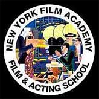
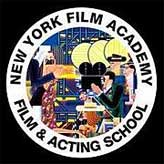

电影学院由电影和百老汇制片人Jerry Sherlock创立。纽约电影学院的最初位于 Robert De Niro的Tribeca 电影中心，并且在1994年迁移到了位于联合广场的前民主党全国代表大会中心。而这个中心所处的大楼就是著 名的前纽约政治机器Tammany Hall。
一个好的电影教育机构应对所有对电影充满热情，动力和执着的人们敞开大门。基于这个信念，纽约电影 学院在12年前成立于Robert DeNiro 的Tribeca 电影中心。纽约电影学院拥有自己的大楼--Tammany大楼，并 在加洲好莱坞环球影城设立学校，在世界各地亦有分校。
每年，成千上百不同领域、不同种族的学生，带着不同的文化背景，不分年龄，从世界各地来到纽约电影 学院，学习我们卓越不凡的电影制作课程。今天，在第一届学生毕业后仅13年，纽约电影学院就已成为世界电 影教育最重要的基地之一。
纽约电影学院认为我们这个时代最重要的艺术形式就是移动影像，不论是个人或者群体，每个国家都透过 电影这个媒体向世界表达他们对人类深入的看法。纽约电影学院的课识程是设计给新一代的电影人，他们可以 通过实例的教学方式，在同一拍摄过程中互相学习。
电影制作需要许多知识。纽约电影学院与众不同的就是其对知识的综合。在我们的课程中，学生学到的不 仅是如何使用摄影机、灯光设计、剪辑影片，他们还会学到与电影制作相关的，相辅相成的所有知识。 纽约电影学院相信电影人的正确的事业之路就是在实战的工作间里制作自己的电影。通过这种教学方式，所 有的学生在一周后就能在学校的工作间里制作自己的电影。
纽约电影学院是许多好莱坞电影工作者首选的电影学院。Steven Spielberg, Pierce Brosnan 和 Murray Abraham 的儿子都曾在我们的学校学习；还有 Luc Besson ("The Fifth Element" 和 "Le Femme Nikita" 的导演) 的妹妹 和导演 Peter Bogdanovich 的女儿。但是，我们影院出产的最佳影片仍然是跟影界无接处的学生创造的。